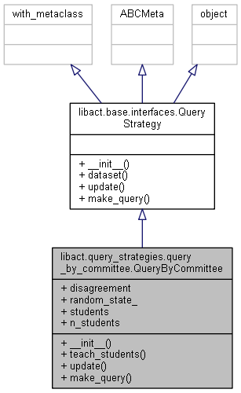

This module contains a class that implements Query by committee active learning algorithm.
Class diagram

Documentation
Parameter
- models : list of :py:mod:
libact.modelsinstances orstr.
This parameter accepts a list of initialized libact Model instances,
or class names of libact Model classes to determine the models to be
included in the committee to vote for each unlabeled instance. - disagreement :
['vote', 'kl_divergence'], optional (default='vote').
Sets the method for measuring disagreement between models.voterepresents vote entropy;kl_divergencerequires models beingProbabilisticModel. - random_state :
{int, np.random.RandomState instance, None}, optional (default=None).
IfintorNone,random_stateis passed as parameter to generatenp.random.RandomStateinstance;
ifnp.random.RandomStateinstance,random_stateis the random number generate.
Attribute
students: list, shape = (len(models)).
A list of the model instances used in this algorithm.random_state: np.random.RandomState instance.
The random number generator using.
Example
Here is an example of declaring a QueryByCommittee query_strategy object:
|
|
Snippets
__init()__
|
|
Note
(1)
For np.random.RandomStateheck check this link out.random.RandomState is similar to random.seed().
|
|
(2)
This function is used to turn seed into RandomState.
|
|
disagreement
|
|
Note
(1)
Formula for vote_entropy and kl_divergence:
$$x_{VE}^* = \arg\max_x - \sum_i \frac{V(y_i)}{C} \log \frac{V(y_i)}{C}$$
$$x_{KL}^* = \arg\max_x - \frac{1}{C} \sum_{c=1}^{C} D(P_{\theta^{(c)}} \Vert P_C)$$
where
$$ D(P_{\theta^{(c)}}|P_C ) = \sum_i P_{\theta^{(c)}}(y_i\mid x)\log\frac{P_{\theta^{(c)}}(y_i\mid x)}{P_C (y_i\mid x)}$$ and
$$P_C (y_i\mid x) = \frac{1}{C}\sum_{c=1}^C P_{\theta^{(c)}}(y_i\mid x)$$
Here $\theta^{(c)}$ represents a classifier in the committee, and $C$ represents the committee, so $P_C(y_i\mid x)$ is the “consensus” of the committee.
(2)
For the function np.tile():
If A.ndim < d, A is promoted to be d-dimensional by prepending new axes.
If A.ndim > d, reps is promoted to A.ndim by pre-pending 1’s to it.
(3)
For the function np.transpose():
|
|
Sampling
|
|
Note
(1)
Here we only use the strategy of bagging, no boosting strategy implemented.
make_query()
|
|
Note
(1)
To choose the max index of avg_kl, they use the method np.where(np.isclose(avg_kl, np.max(avg_kl))).
|
|
Instead, we can simply use the argmax of numpy.
|
|
(2)
The fuction np.where(condition[, x, y]) returns elements, either from x or y, depending on condition.
If x and y are given and input arrays are 1-D, where is equivalent to:
(3)
The function np.isclose(a, b, rtol=1e-05, atol=1e-08, equal_nan=False) returns a boolean array where two arrays are element-wise equal within a tolerance.
For finite values, isclose uses the following equation to test whether two floating point values are equivalent.
Reference:
[1] Seung, H. Sebastian, Manfred Opper, and Haim Sompolinsky. “Query by committee.” Proceedings of the fifth annual workshop on Computational learning theory. ACM, 1992.
[2] Settles, Burr. “Active learning literature survey.” University of Wisconsin, Madison 52.55-66 (2010): 11.